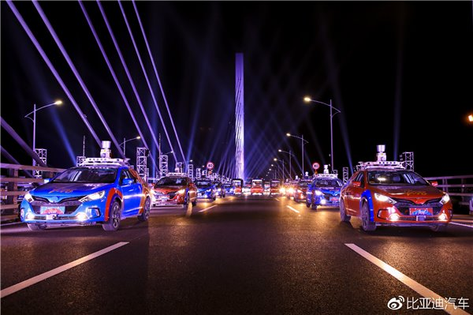
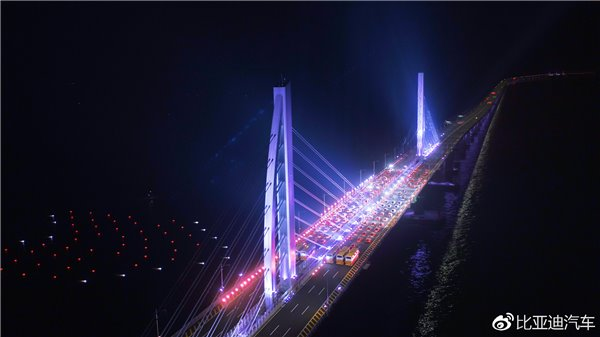

大秀神操作：百度Apollo比亚迪无人车登上春晚舞台
IT之家2月16日消息 昨天晚上20:00，央视狗年春晚正式拉开帷幕。春晚开场，比亚迪无人驾驶车队跨越港珠澳大桥。
据了解，此次比亚迪无人驾驶车队搭载百度Apollo系统。比亚迪与百度强强联合，相互“赋能”，代表着中国在新能源汽车和无人
驾驶领域最高水平的合作，展现的是我国科创领域最前沿的成果。
在星光、烟花的映衬下，“海陆空”无人系统首次联合展演。无人机与无人船
呈现出“海豚腾空而起时浪花翻腾”的画面。
视频中，百度Apollo无人车队在港珠澳大桥上呈“S”形快速穿梭，精准、流畅地走出高难度的“蛇”形路线，画面十分震撼。
百度官方表示，作为百度人我们感到骄傲自豪！此刻我们有理由相信，国家新一代人工智能开放创新平台——百度Apollo，
一定能继续创造出让世界瞩目的中国人工智能力量！为中国工业加速！为世界工业加速。
据了解，百度的这套无人驾驶系统正式发布于2017年4月19日，旨在向汽车行业及自动驾驶领域的合作伙伴提供一个开放、
完整、安全的软件平台，帮助他们结合车辆和硬件系统，快速搭建一套属于自己的完整的自动驾驶系统。
在今年的CES上，百度亮相了Apollo2.0系统。
视频1：点此观看！